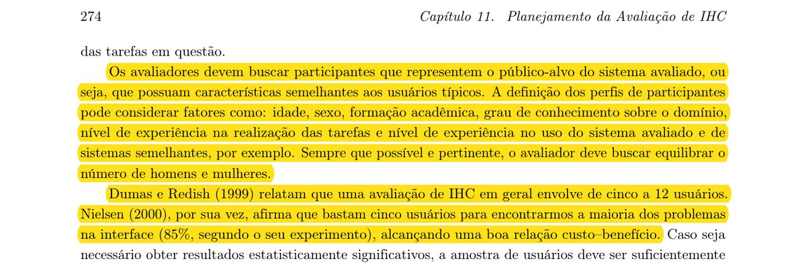
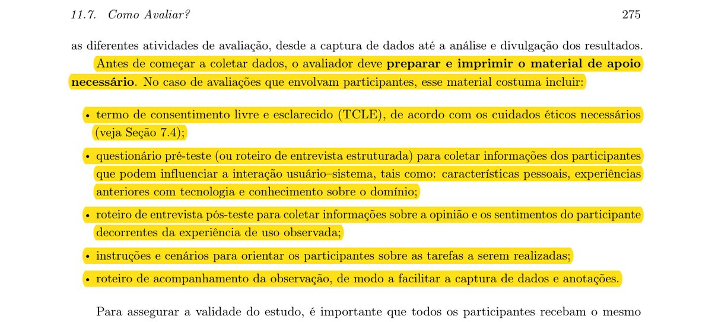
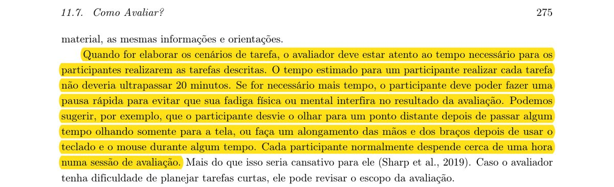
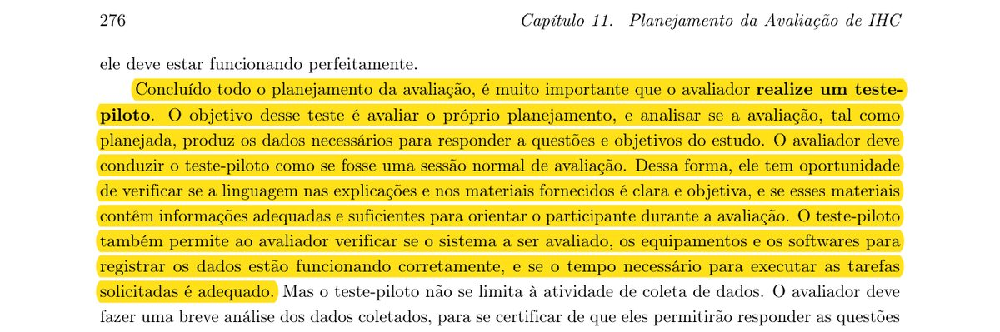
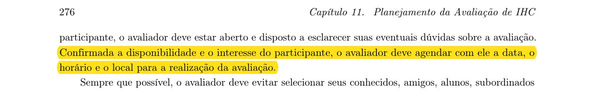
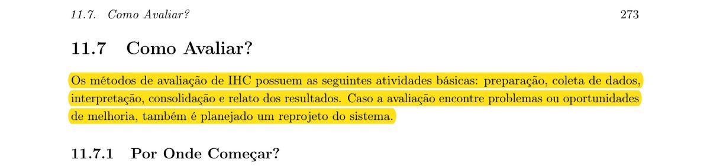

I: Identificar e administrar as questões práticas
Introdução
Os itens 6 a 11 verificam as questões práticas — participantes, material de apoio e, no cronograma, tempo de sessão, teste-piloto, agendamento e sequência das atividades (I).
I: Identificar e administrar as questões práticas — participantes e material
Item 6: O planejamento define o perfil dos participantes, de modo a representar o público-alvo (considerando fatores como idade, sexo, formação acadêmica, grau de conhecimento sobre o domínio, nível de experiência na realização das tarefas e nível de experiência no uso do sistema avaliado e de sistemas semelhantes), e define e justifica o número de participantes (por exemplo, de cinco a 12 usuários, ou cinco usuários para encontrar a maioria dos problemas da interface)?
Onde conferir no documento da Entrega 4: Seção 1, linha “I — Identificar as questões práticas” (participantes) e Seção 2 (perfil e número de participantes no relato).
Resposta: [ ] CONFORME [ ] NÃO CONFORME [ x ] NÃO SE APLICA
- Texto de Origem (Citação Literal):
“Os avaliadores devem buscar participantes que representem o público-alvo do sistema avaliado, ou seja, que possuam características semelhantes aos usuários típicos. A definição dos perfis de participantes pode considerar fatores como: idade, sexo, formação acadêmica, grau de conhecimento sobre o domínio, nível de experiência na realização das tarefas e nível de experiência no uso do sistema avaliado e de sistemas semelhantes, por exemplo. Sempre que possível e pertinente, o avaliador deve buscar equilibrar o número de homens e mulheres. Dumas e Redish (1999) relatam que uma avaliação de IHC em geral envolve de cinco a 12 usuários. Nielsen (2000), por sua vez, afirma que bastam cinco usuários para encontrarmos a maioria dos problemas na interface (85%, segundo o seu experimento), alcançando uma boa relação custo–benefício.”
- Fonte:
- Página: 274, Capítulo 11. Planejamento da Avaliação de IHC. Seção 11.7.2 Preparação. Livro: SIMONE DINIZ JUNQUEIRA BARBOSA, BRUNO SANTANA DA SILVA, MILENE SELBACH SILVEIRA, ISABELA GASPARINI, TICIANNE DARIN, GABRIEL DINIZ JUNQUEIRA BARBOSA, Interação Humano-Computador e Experiência do Usuário, 1ª Edição, Rio de Janeiro, 2021. Publicado em: 03/05/2021.
- Foto (trecho de origem destacado):

Item 7: O planejamento prevê o material de apoio da avaliação com participantes: termo de consentimento livre e esclarecido (TCLE); questionário pré-teste (ou roteiro de entrevista estruturada); roteiro de entrevista pós-teste; instruções e cenários das tarefas; e roteiro de acompanhamento da observação?
Onde conferir no documento da Entrega 4: Seção 1, linha “I — Identificar as questões práticas” (recursos: roteiro, formulário de consentimento) e linha “D — Decidir as questões éticas”.
Resposta: [ ] CONFORME [ ] NÃO CONFORME [ x ] NÃO SE APLICA
- Texto de Origem (Citação Literal):
“Antes de começar a coletar dados, o avaliador deve preparar e imprimir o material de apoio necessário. No caso de avaliações que envolvam participantes, esse material costuma incluir: • termo de consentimento livre e esclarecido (TCLE), de acordo com os cuidados éticos necessários (veja Seção 7.4); • questionário pré-teste (ou roteiro de entrevista estruturada) para coletar informações dos participantes que podem influenciar a interação usuário–sistema, tais como: características pessoais, experiências anteriores com tecnologia e conhecimento sobre o domínio; • roteiro de entrevista pós-teste para coletar informações sobre a opinião e os sentimentos do participante decorrentes da experiência de uso observada; • instruções e cenários para orientar os participantes sobre as tarefas a serem realizadas; • roteiro de acompanhamento da observação, de modo a facilitar a captura de dados e anotações.”
- Fonte:
- Página: 275, Capítulo 11. Planejamento da Avaliação de IHC. Seção 11.7.2 Preparação. Livro: SIMONE DINIZ JUNQUEIRA BARBOSA, BRUNO SANTANA DA SILVA, MILENE SELBACH SILVEIRA, ISABELA GASPARINI, TICIANNE DARIN, GABRIEL DINIZ JUNQUEIRA BARBOSA, Interação Humano-Computador e Experiência do Usuário, 1ª Edição, Rio de Janeiro, 2021. Publicado em: 03/05/2021.
- Foto (trecho de origem destacado):

I: Identificar e administrar as questões práticas — cronograma do planejamento
Item 8: O tempo planejado é compatível com o recomendado: cada tarefa estimada em, no máximo, 20 minutos (com pausa rápida se for necessário mais tempo) e cerca de uma hora por participante em cada sessão de avaliação?
Onde conferir no documento da Entrega 4: Seção 1, linha “I” (duração das sessões) e Seção 5.2 (plano dia a dia).
Resposta: [ x ] CONFORME [ ] NÃO CONFORME [ ] NÃO SE APLICA
- Texto de Origem (Citação Literal):
“Quando for elaborar os cenários de tarefa, o avaliador deve estar atento ao tempo necessário para os participantes realizarem as tarefas descritas. O tempo estimado para um participante realizar cada tarefa não deveria ultrapassar 20 minutos. Se for necessário mais tempo, o participante deve poder fazer uma pausa rápida para evitar que sua fadiga física ou mental interfira no resultado da avaliação. Podemos sugerir, por exemplo, que o participante desvie o olhar para um ponto distante depois de passar algum tempo olhando somente para a tela, ou faça um alongamento das mãos e dos braços depois de usar o teclado e o mouse durante algum tempo. Cada participante normalmente despende cerca de uma hora numa sessão de avaliação.”
- Fonte:
- Página: 275, Capítulo 11. Planejamento da Avaliação de IHC. Seção 11.7.2 Preparação. Livro: SIMONE DINIZ JUNQUEIRA BARBOSA, BRUNO SANTANA DA SILVA, MILENE SELBACH SILVEIRA, ISABELA GASPARINI, TICIANNE DARIN, GABRIEL DINIZ JUNQUEIRA BARBOSA, Interação Humano-Computador e Experiência do Usuário, 1ª Edição, Rio de Janeiro, 2021. Publicado em: 03/05/2021.
- Foto (trecho de origem destacado):

Item 9: Está previsto um teste-piloto, conduzido como uma sessão normal de avaliação, para avaliar o próprio planejamento: verificar se a linguagem e os materiais são claros e suficientes, se o sistema, os equipamentos e os softwares de registro funcionam corretamente e se o tempo das tarefas é adequado?
Onde conferir no documento da Entrega 4: Seção 1, linha “I” (teste-piloto) e Seção 5.2 (período do piloto antes das sessões).
Resposta: [ x ] CONFORME [ ] NÃO CONFORME [ ] NÃO SE APLICA
- Texto de Origem (Citação Literal):
“Concluído todo o planejamento da avaliação, é muito importante que o avaliador realize um teste-piloto. O objetivo desse teste é avaliar o próprio planejamento, e analisar se a avaliação, tal como planejada, produz os dados necessários para responder a questões e objetivos do estudo. O avaliador deve conduzir o teste-piloto como se fosse uma sessão normal de avaliação. Dessa forma, ele tem oportunidade de verificar se a linguagem nas explicações e nos materiais fornecidos é clara e objetiva, e se esses materiais contêm informações adequadas e suficientes para orientar o participante durante a avaliação. O teste-piloto também permite ao avaliador verificar se o sistema a ser avaliado, os equipamentos e os softwares para registrar os dados estão funcionando corretamente, e se o tempo necessário para executar as tarefas solicitadas é adequado.”
- Fonte:
- Página: 276, Capítulo 11. Planejamento da Avaliação de IHC. Seção 11.7.2 Preparação. Livro: SIMONE DINIZ JUNQUEIRA BARBOSA, BRUNO SANTANA DA SILVA, MILENE SELBACH SILVEIRA, ISABELA GASPARINI, TICIANNE DARIN, GABRIEL DINIZ JUNQUEIRA BARBOSA, Interação Humano-Computador e Experiência do Usuário, 1ª Edição, Rio de Janeiro, 2021. Publicado em: 03/05/2021.
- Foto (trecho de origem destacado):

Item 10: O planejamento prevê o agendamento, com cada participante, da data, do horário e do local de realização da avaliação?
Onde conferir no documento da Entrega 4: Seção 5.2 (plano dia a dia: período das sessões com participantes) e Seção 5.1 (marcos fixos).
Resposta: [ ] CONFORME [ ] NÃO CONFORME [ x ] NÃO SE APLICA
- Texto de Origem (Citação Literal):
“Confirmada a disponibilidade e o interesse do participante, o avaliador deve agendar com ele a data, o horário e o local para a realização da avaliação.”
- Fonte:
- Página: 276, Capítulo 11. Planejamento da Avaliação de IHC. Seção 11.7.2 Preparação. Livro: SIMONE DINIZ JUNQUEIRA BARBOSA, BRUNO SANTANA DA SILVA, MILENE SELBACH SILVEIRA, ISABELA GASPARINI, TICIANNE DARIN, GABRIEL DINIZ JUNQUEIRA BARBOSA, Interação Humano-Computador e Experiência do Usuário, 1ª Edição, Rio de Janeiro, 2021. Publicado em: 03/05/2021.
- Foto (trecho de origem destacado):

Item 11: O cronograma do planejamento ordena no tempo, com datas, as atividades básicas da avaliação — preparação, coleta de dados, interpretação, consolidação e relato dos resultados — e prevê o reprojeto do sistema caso a avaliação encontre problemas ou oportunidades de melhoria?
Onde conferir no documento da Entrega 4: Seção 5 (Cronograma): 5.1 Entregas da fase, 5.2 Plano dia a dia e 5.3 Artefatos por integrante (versões v1 e v2 do storyboard).
Resposta: [ x ] CONFORME [ ] NÃO CONFORME [ ] NÃO SE APLICA
- Texto de Origem (Citação Literal):
“Os métodos de avaliação de IHC possuem as seguintes atividades básicas: preparação, coleta de dados, interpretação, consolidação e relato dos resultados. Caso a avaliação encontre problemas ou oportunidades de melhoria, também é planejado um reprojeto do sistema.”
- Fonte:
- Página: 273, Capítulo 11. Planejamento da Avaliação de IHC. Seção 11.7 Como Avaliar?. Livro: SIMONE DINIZ JUNQUEIRA BARBOSA, BRUNO SANTANA DA SILVA, MILENE SELBACH SILVEIRA, ISABELA GASPARINI, TICIANNE DARIN, GABRIEL DINIZ JUNQUEIRA BARBOSA, Interação Humano-Computador e Experiência do Usuário, 1ª Edição, Rio de Janeiro, 2021. Publicado em: 03/05/2021.
- Foto (trecho de origem destacado):

Referências
- BARBOSA, Simone Diniz Junqueira; SILVA, Bruno Santana da; SILVEIRA, Milene Selbach; GASPARINI, Isabela; DARIN, Ticianne; BARBOSA, Gabriel Diniz Junqueira. Interação Humano-Computador e Experiência do Usuário. 1. ed. Rio de Janeiro, 2021 (versão de 03 de maio de 2021). [Material utilizado: Capítulo 11 – Planejamento da Avaliação de IHC, arquivo 'Cap. Planejamento ihc-ux (1).pdf', p. 264 a 280].
- Documento inspecionado: No Fluxo UnB — Grupo 02 — Entrega 4: Planejamento da Avaliação e do Relato dos Resultados — Storyboard e Análise de Tarefas, com Cronograma até 03/11/2026 (arquivo 'PlajRelatoStoryBoardNoFluxo_GerenciadorFaltas (2).pdf').
Histórico de versão
| Versão | Data | Descrição | Autor(es) | Revisor(es) |
|---|---|---|---|---|
| 1.0 | 12/10/2026 | Publicação da Entrega 4 (planejamento da avaliação do storyboard e da análise de tarefas) a partir do documento do grupo, dividida em artefatos, com nomes e matrículas de Felipe, Matheus e Victor (issue #59) | Felipe Lopes Pedroza, Matheus do Vale Lameira e Victor Andreozzi de La Rocque Couto | A definir (validação pendente) |
| 1.1 | 13/10/2026 | Inclusão da lista de verificação do Storyboard (15 itens, com respostas, textos de origem, fontes e fotos dos trechos), em artefatos por atividade do DECIDE (issue #61) | Matheus do Vale Lameira | A definir (validação pendente) |
| 1.2 | 13/10/2026 | Autoria da lista de verificação do Storyboard (Matheus e Felipe) e inclusão dos vídeos da lista de verificação e da apresentação da Entrega 4 (issue #62) | Matheus do Vale Lameira e Felipe Lopes Pedroza | A definir (validação pendente) |
| 1.3 | 13/10/2026 | Publicação da parte individual de Felipe (Gerenciador de Faltas) com o cronograma até 03/11/2026, dividida em artefatos (issue #63) | Felipe Lopes Pedroza (conteúdo); Matheus do Vale Lameira (publicação) | A definir (validação pendente) |
| 1.4 | 13/10/2026 | Correção da atribuição da parte individual (Gerenciador de Faltas, com cronograma): a entrega do documento é de Victor, Matheus e Felipe, com os três nomes e matrículas no cabeçalho (issue #64) | Victor Andreozzi de La Rocque Couto, Matheus do Vale Lameira e Felipe Lopes Pedroza | A definir (validação pendente) |